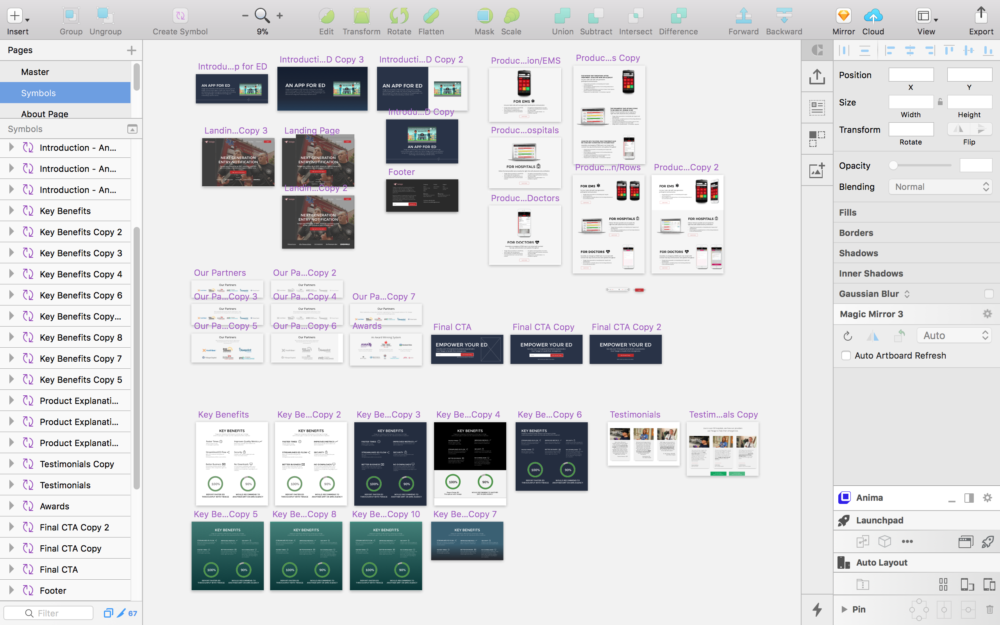
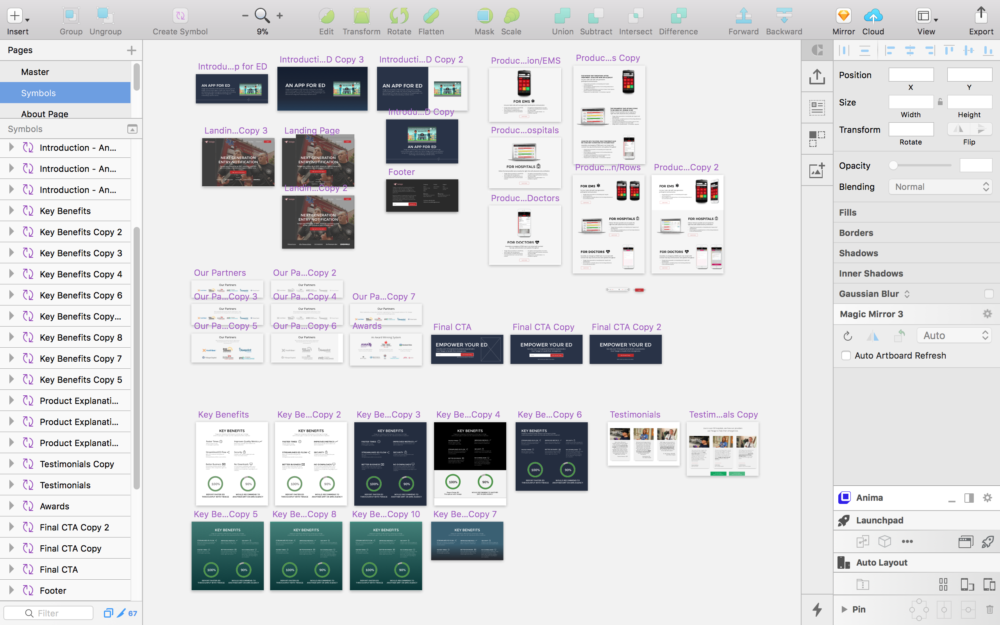

Twiage
Twiage is a Boston based digital health startup that builds disruptive communication technology used between hospitals and ambulances to accelerate emergency care. For the summer of 2017, I had the opportunity to work as the company’s first design intern.
Field Research
Web Design
Usability Testing
Marketing + Visual Branding
Web Dashboard for Emergency Room Hospitals

Responsive Marketing Landing Page
Case Study: Landing Page
As the first thing that potential clients will see, the landing page is a crucial entry point for explaining the product, communicating the company's brand mesage, and hopefully garner enough interest to compel customers to sign up for a demo. With a designer now on board, the team decided that it was about time the site had a redesign.
Upon first glance, the old site looked flat and outdated.

Stylistic improvements aside, the main problems of the old site was that it was failing to get signups. This could be due to a variety of reasons but the ones I suspected was its lack of call to actions, confusion as to who the product was for and how it could help.
So, the three main questions I set out to answer before designing:
- Who are the user groups that are coming to the site and what are they looking for? - User research
- Are the user groups able to understand the product and see how they might use the product in their own workflows after reading through the site? - Usability
- What specific styles/themes appeal to emergency health professionals?
User Research
Who are the user groups that are coming to the site and what are they looking for?
I had the opportunity to sit in on a few focus groups with paramedics who use the app as well as sales pitches to hospital ED directors. While listening in and feverishly taking notes and asking questions throughout, I was able to get a better picture of who I was designing for and what their needs might be when looking for a product.
The three main user groups I was designing for:
Usability
Are the user groups able to understand the product and see how they might use the product in their own workflows after reading through the site?
In order to identify any usability issues with the old site and subsequently evaluate the future design iterations, I used a heuristic analysis / question list. From my observations from people who have not seen the site or know what Twiage is, users generally have difficult understanding what the product is and who the product is for. This is most likely due to there being multiple components in the Twiage product eco system (mobile app used by paramedics, desktop web app used by ER nurse, separate mobile app used by doctors).
Landing page will have to breakdown the eco system into three separate products for three separate users and explain how the different parts work together.
Question List:
First Impression
Why are they here? How did they get here?
What do they already know? What don’t they know?
What makes me want to trust a site/business I’ve never heard of before?
After reading main flow
After reading the site, do they fully understand what the app does?
What do I still not understand? Where can I get this information?
Layout
Does the layout make sense?
Does the flow line up with my thought process?
Can I access the information I need easily?
Product Reflection
Why would they want to use Twiage?
What do I like about the app?
What would make me impressed?
Are other people using this? Even if I think it’s good, have other people thought the same?
If I thought it was bad, am I wrong or did I just not understand the product?
What do I think is stupid about the app? Do I even need some of the features? I would like this feature, but I don’t remember it being there, do they have this feature or is it too much of a hassle to find it again?
Am I curious to find out how it works on the EMS side?
Design Goals
- User should know what the Twiage product is and how it works after reading through landing page.
- User should know the difference between the various Twiage products and how they work together
- User should be able to understand how using the product might work in their own workflows thus persuading the user into wanting the product
- Encourage user to sign up for a demo or contact us
- Communicate fast paced, emergency brand image and achieve consistency throughout marketing language
 

Iteration | UX Copywriting | Incorporating Team Feedback
In order to ensure that what I was creating was what the team was envisioning, I organized a series of website critques/UX copywriting/style brainstorming sessions with the entire team.
Hearing everyone's feedback was immensely helpful for my work moving forward. The team eventually settled on: BOLD, Powerful, Simple, Hassle free, Speed, Efficient, Privacy, Trust, Secure as the most important themes
Conclusion
After many, many hours of iterating, implementing, and figuring out Flexbox, the site was ready to be deployed. The project was my first real go at web design so I’m thankful for the time, support, and patience from my supervisor YiDing and the Twiage team.
What I Learned
- How to ask for constructive feedback: my first few design iterations was met with unfocused/critical feedback from stakeholders. Though my gut reaction was to take things personally, I realized that generally non-designers don't know exactly what they want visually or how to analyze work - they just know if they like something or not. From this project I learned that as a designer working with non-designers, it is my responsibility to (a.) understand exactly what the client wants stylistically before designing (moodboards, competitive analysis/comparisons) and (b.) create a understandable framework for what to look for in their critique (heuristic analysis)
What I'd do differently
I performed a lot of initial research on the target users before designing the site but wasn’t able to get data on how users currently think of the website. With more time and resources, I would have liked to perform some usability testing.
Because I had to work around the Wordpress template theme, I spent a lot of time working around the template and Wordpress content editor, when I could’ve spent more time iterating and improving upon my designs. I also could not figure out a way to incorporate javascript which could have added more snazz and interactivity to the site.

© 2019 Dennis Kim